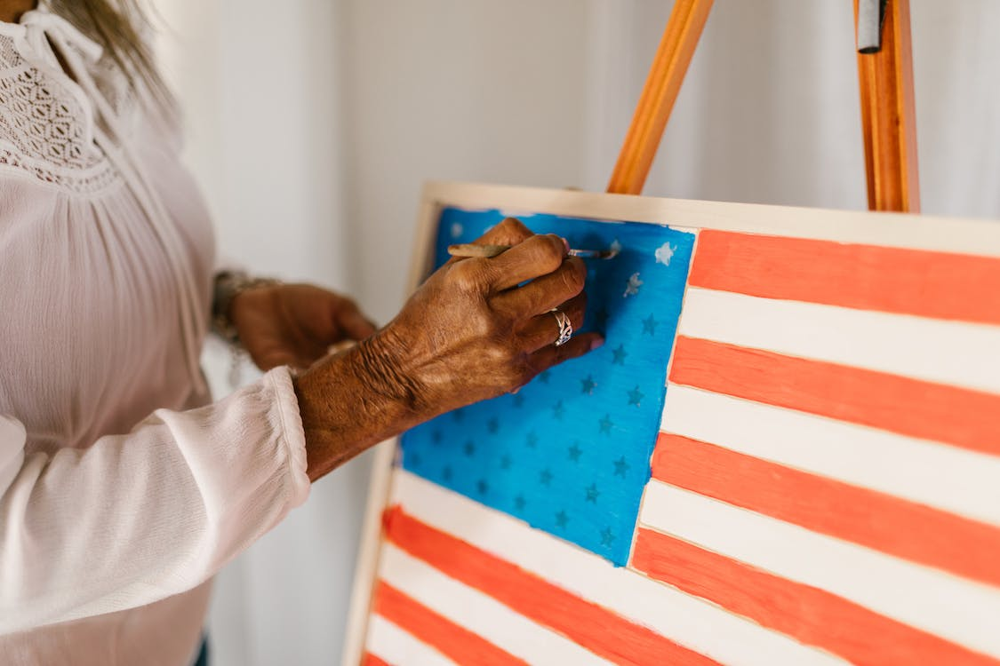

ART4U
Emily Twyman
WDD 130-01
Home
Beginner
Intermediate
Advanced
Site Plan
Beginner

Beginner Watercolor
Easy Watercolor Painting Ideas for Beginners Step by Step
Watercolor Beginner Series Episode 1 - Materials
How to Start Watercolor Painting – First Steps for Beginners
Acrylic
How to Paint with Acrylics for Beginners: The Ultimate Guide
Acrylic Painting For Beginners #MooreMethod
Acrylic Painting TIPS for Beginners - How to GET STARTED
Sketching
How To Draw: Free Course
Learn To Draw #01 - Sketching Basics + Materials
Learn How to Draw for Beginners - Episode 1
Oil Paint
Oil Painting Guide: 10 Tips for Beginners
Oil Painting Basics Tutorial For Beginners | Realistic Cherries
Oil Painting for Beginners - Basic Techniques + Step by Step Demonstration
A Crash Course on How to Oil Paint
Guache
The Beginner’s Guide to Gouache
INTRODUCTION TO GOUACHE | A Beginners Guide - Materials, Blending, Techniques and more
How To Layer Gouache - Dos and Don'ts
Charcoal
HOW TO DRAW | Basics of Charcoal Drawing for Beginners
Charcoal Drawing Tutorial (Complete Beginners Guide!)
Charcoal Drawing For Beginners
How to Get Started Drawing with Charcoal
Chalk Pastels
5 Soft Pastel Techniques for Beginners
Soft Pastel For Beginners: How To Draw With Soft Pastel
Soft pastel techniques | Soft pastels for beginners
For all Beginners!
There are tons of resources for you to use!
Navigation
Home
Beginner
Intermediate
Advanced
Site Plan